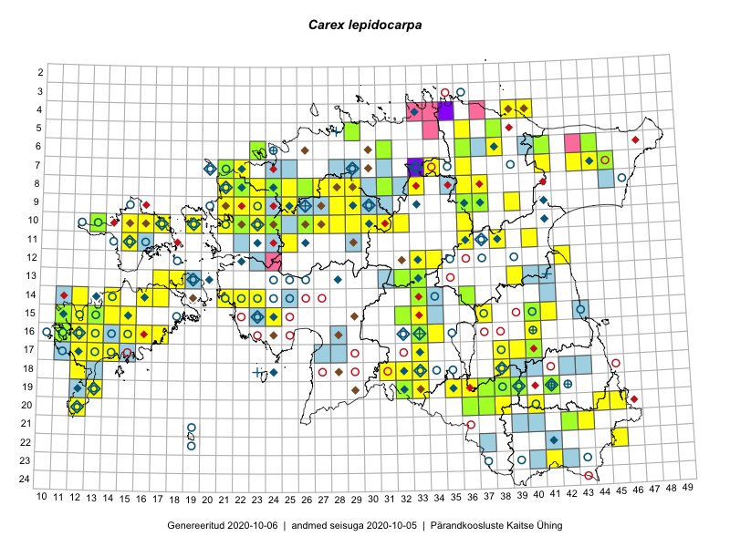

Carex lepidocarpa — niidutarn
Cyperaceae :: Carex lepidocarpa Tausch (455)

Kaart põhineb 753 kirjel:
vaatlusi 249
herbaareksemplare 206
PKÜ kirjeid1 31
ELFi kirjeid2 267
Taime kaasaegsed ja ajaloolised leiukohad asuvad 258 ruudus.
Tingmärgid ja leidudega ruutude arvud periooditi uues (u) ja 2005 andmestikus (v)
| █ | vahemik | u3 | v4 |
|---|---|---|---|
| █ | 2006–2020 | 191 | – |
| ◆/◇ | 1971–2005 | 93 | 99 |
| ○ | 1921–1970 | 91 | 59 |
| + | kuni 1920 | 11 | 1 |
| × | hävinud | – | 0 |
| ? | kaheldav | – | 1 |
| Ruut | Leidja(d) | Leiuaeg | Kirje |
|---|---|---|---|
| 08-29 | Toivo Sepp | 2020-09-18 | ELF: 1052 |
| 08-29 | Toivo Sepp | 2020-09-17 | ELF: 2645 |
| 08-29 | Toivo Sepp | 2020-09-17 | ELF: 1049 |
| 09-28 | Toivo Sepp | 2020-09-09 | ELF: 17951 |
| 19-36 | Eerik Leibak | 2020-08-30 | ELF: 692 |
| 10-30 | Ott Luuk | 2020-08-24 | ruut/ala: Carex lepidocarpa Tausch |
| 10-29 | Ott Luuk | 2020-08-24 | ruut/ala: Carex lepidocarpa Tausch |
| 15-14 | Mari Reitalu, Sirje Azarov | 2020-08-24 | ruut/ala: Carex lepidocarpa Tausch |
| 18-33 | Ott Luuk, Jaak-Albert Metsoja | 2020-08-21 | ruut/ala: Carex lepidocarpa Tausch |
| 14-16 | Mari Reitalu, Sirje Azarov | 2020-08-19–2020-08-20 | ruut/ala: Carex lepidocarpa Tausch |
| 21-39 | Eerik Leibak | 2020-08-19 | ELF: 899 |
| 14-17 | Mari Reitalu, Sirje Azarov | 2020-08-18 | ruut/ala: Carex lepidocarpa Tausch |
| 14-17 | Mari Reitalu, Sirje Azarov | 2020-08-18 | ruut/ala: Carex lepidocarpa Tausch |
| 22-37 | Eerik Leibak | 2020-08-18 | ELF: 890 |
| 04-39;04-40 | Jaan Spiegel | 2020-08-17 | ELF: 958 |
| 17-39 | Silvia Pihu | 2020-08-16 | ELF: 699 |
| 13-18 | Mari Reitalu, Sirje Azarov | 2020-08-11–2020-08-12 | ruut/ala: Carex lepidocarpa Tausch |
| 15-15 | Mari Reitalu, Sirje Azarov | 2020-08-07 | ruut/ala: Carex lepidocarpa Tausch |
| 10-23 | Peedu Saar | 2020-08-05 | ruut/ala: Carex lepidocarpa Tausch |
| 10-23 | Ott Luuk | 2020-08-05 | ruut/ala: Carex lepidocarpa Tausch |
| 08-25 | Ott Luuk | 2020-07-22–2020-07-23 | ruut/ala: Carex lepidocarpa Tausch |
| 16-16 | Mari Reitalu, Sirje Azarov, Anne Teigamägi | 2020-07-22 | ruut/ala: Carex lepidocarpa Tausch |
| 06-31 | Eerik Leibak | 2020-07-19 | ELF: 313 |
| 05-36 | Jaan Spiegel | 2020-07-18 | ELF: 159 |
| 07-36 | Jaan Spiegel | 2020-07-15 | ELF: 752 |
| 16-15 | Mari Reitalu, Sirje Azarov, Anne Teigamägi | 2020-07-07 | ruut/ala: Carex lepidocarpa Tausch |
| 19-38 | Mari Reitalu, Sirje Azarov, Riine Latserus | 2020-07-05 | ruut/ala: Carex lepidocarpa Tausch |
| 19-37 | Mari Reitalu, Sirje Azarov, Riine Latserus | 2020-07-04 | ruut/ala: Carex lepidocarpa Tausch |
| 08-28 | Ott Luuk | 2020-06-21 | ruut/ala: Carex lepidocarpa Tausch |
| 10-27 | Thea Kull | 2020-06-16 | punkt: Carex lepidocarpa Tausch |
| 15-13 | Kai Vellak | 2020-06-16 | TU286334: Carex lepidocarpa Tausch |
| 16-13 | Mari Reitalu, Sirje Azarov | 2019-09-26 | ruut/ala: Carex lepidocarpa Tausch |
| 16-13;16-14 | Mari Reitalu, Sirje Azarov | 2019-09-26 | ELF: 81 |
| 14-21 | Peedu Saar, Toomas Kukk | 2019-09-25 | ruut/ala: Carex lepidocarpa Tausch |
| 15-14 | Mari Reitalu, Sirje Azarov | 2019-09-23 | ruut/ala: Carex lepidocarpa Tausch |
| 07-31 | Eerik Leibak | 2019-09-19 | ELF: 1352 |
| 10-19 | Peedu Saar, Toomas Kukk | 2019-09-18 | ruut/ala: Carex lepidocarpa Tausch |
| 12-34 | Eerik Leibak | 2019-09-07 | ruut/ala: Carex lepidocarpa Tausch |
| 08-24 | Peedu Saar, Ott Luuk | 2019-09-05 | ruut/ala: Carex lepidocarpa Tausch |
| 08-25 | Ott Luuk, Peedu Saar | 2019-09-05 | ruut/ala: Carex lepidocarpa Tausch |
| 09-22 | Ott Luuk | 2019-09-04 | ELF: 324 |
| 09-22 | Ott Luuk | 2019-09-04 | ELF: 24833 |
| 09-22 | Ott Luuk | 2019-09-03–2019-09-04 | ruut/ala: Carex lepidocarpa Tausch |
| 08-21;08-22 | Peedu Saar | 2019-09-03 | ELF: 24808 |
| 09-22 | Ott Luuk | 2019-09-03 | ELF: 2330 |
| 09-22 | Ott Luuk | 2019-09-03 | ELF: 21063 |
| 09-22 | Ott Luuk | 2019-09-03 | ELF: 24829 |
| 16-13 | Mari Reitalu, Triin Reitalu | 2019-09-03 | ruut/ala: Carex lepidocarpa Tausch |
| 15-13 | Sirje Azarov, Mari Reitalu | 2019-08-31 | ELF: 9 |
| 15-13 | Mari Reitalu, Sirje Azarov | 2019-08-31 | ruut/ala: Carex lepidocarpa Tausch |
| 08-30;09-30 | Toivo Sepp, Ott Luuk | 2019-08-30 | ELF: 934 |
| 08-30 | Ott Luuk, Toivo Sepp | 2019-08-30 | ELF: 24747 |
| 08-30 | Ott Luuk | 2019-08-30 | ELF: 11335 |
| 15-32 | Mari Reitalu, Thea Kull, Martin Tikk | 2019-08-29 | ruut/ala: Carex lepidocarpa Tausch |
| 16-33 | Mari Reitalu, Thea Kull | 2019-08-27 | ruut/ala: Carex lepidocarpa Tausch |
| 16-12 | Sirje Azarov, Mari Reitalu | 2019-08-25 | ELF: 58 |
| 10-22 | Tõnu Ploompuu | 2019-08-21 | ELF: 24796 |
| 10-22 | Tõnu Ploompuu | 2019-08-20 | ELF: 2170 |
| 17-13 | Mari Reitalu, Sirje Azarov | 2019-08-19 | ELF: 23 |
| 17-13 | Mari Reitalu, Sirje Azarov | 2019-08-19 | ELF: 24785 |
| 10-26 | Thea Kull | 2019-08-17 | ruut/ala: Carex lepidocarpa Tausch |
| 10-26 | Thea Kull | 2019-08-17 | ELF: 20159 |
| 09-22 | Peedu Saar | 2019-08-16 | ELF: 2344 |
| 10-21 | Tõnu Ploompuu | 2019-08-15 | ELF: 24802 |
| 07-21 | Peedu Saar | 2019-08-15 | ELF: 5888 |
| 08-21;09-21 | Peedu Saar | 2019-08-15 | ELF: 21047 |
| 16-13 | Mari Reitalu, Sirje Azarov | 2019-08-15 | ruut/ala: Carex lepidocarpa Tausch |
| 16-13 | Mari Reitalu, Sirje Azarov | 2019-08-15 | ELF: 14 |
| 16-13 | Mari Reitalu, Sirje Azarov | 2019-08-15 | ELF: 24783 |
| 11-36 | Peedu Saar | 2019-08-10 | ruut/ala: Carex lepidocarpa Tausch |
| 11-36 | Peedu Saar | 2019-08-10 | ruut/ala: Carex lepidocarpa Tausch |
| 11-36 | Peedu Saar | 2019-08-10 | ELF: 12126 |
| 10-36 | Peedu Saar, Timo Luhamäe | 2019-08-08 | ruut/ala: Carex lepidocarpa Tausch |
| 08-33 | Ott Luuk, Jaak-Albert Metsoja | 2019-08-08 | ruut/ala: Carex lepidocarpa Tausch |
| 07-34 | Toomas Kukk, Rein Kalamees, Kaur Maran | 2019-08-07 | ruut/ala: Carex lepidocarpa Tausch |
| 06-36 | Peedu Saar, Timo Luhamäe | 2019-08-07 | ruut/ala: Carex lepidocarpa Tausch |
| 15-12 | Sirje Azarov, Mari Reitalu | 2019-08-06 | ELF: 106 |
| 15-12 | Sirje Azarov, Mari Reitalu | 2019-08-06 | ELF: 2627 |
| 04-39 | Ott Luuk, Jaak-Albert Metsoja | 2019-08-06 | ruut/ala: Carex lepidocarpa Tausch |
| 15-12 | Mari Reitalu, Sirje Azarov | 2019-08-06 | ruut/ala: Carex lepidocarpa Tausch |
| 16-12 | Mari Reitalu, Sirje Azarov | 2019-08-06 | ELF: 60 |
| 06-31 | Peedu Saar, Timo Luhamäe | 2019-08-05 | ruut/ala: Carex lepidocarpa Tausch |
| 08-36 | Ott Luuk, Jaak-Albert Metsoja | 2019-08-05 | ruut/ala: Carex lepidocarpa Tausch |
| 10-24 | Tõnu Ploompuu | 2019-08-03 | ELF: 7763 |
| 10-24 | Tõnu Ploompuu | 2019-08-03 | ELF: 7764 |
| 08-21 | Peedu Saar | 2019-07-26 | ruut/ala: Carex lepidocarpa Tausch |
| 08-21 | Peedu Saar | 2019-07-26 | ELF: 6087 |
| 07-21 | Peedu Saar | 2019-07-25 | ELF: 5892 |
| 07-21 | Peedu Saar | 2019-07-25 | ELF: 5893 |
| 07-21 | Peedu Saar | 2019-07-25 | ELF: 21002 |
| 07-22 | Peedu Saar | 2019-07-24 | ruut/ala: Carex lepidocarpa Tausch |
| 07-22 | Peedu Saar | 2019-07-24 | ELF: 20011 |
| 17-39 | Thea Kull | 2019-07-23 | ruut/ala: Carex lepidocarpa Tausch |
| 11-29 | Ott Luuk, Toivo Sepp | 2019-07-23 | ELF: 1124 |
| 11-22 | Tõnu Ploompuu, Eliko Kõiv | 2019-07-21 | ELF: 238 |
| 11-24 | Tõnu Ploompuu, Eliko Kõiv | 2019-07-20 | ELF: 212 |
| 10-24 | Tõnu Ploompuu, Eliko Kõiv | 2019-07-20 | ELF: 9869 |
| 10-24;11-24 | Tõnu Ploompuu, Eliko Kõiv | 2019-07-20 | ELF: 24787 |
| 15-32 | Eerik Leibak | 2019-07-20 | TAA0148194: Carex lepidocarpa Tausch |
| 13-32 | Eerik Leibak | 2019-07-20 | ELF: 1182 |
| 13-32 | Eerik Leibak | 2019-07-20 | ELF: 1183 |
| 15-32 | Eerik Leibak | 2019-07-20 | ELF: 1252 |
| 19-36 | Ott Luuk, Peedu Saar | 2019-07-16 | ruut/ala: Carex lepidocarpa Tausch |
| 19-35 | Ott Luuk, Peedu Saar | 2019-07-16 | ruut/ala: Carex lepidocarpa Tausch |
| 17-38 | Peedu Saar, Ott Luuk | 2019-07-15 | ruut/ala: Carex lepidocarpa Tausch |
| 17-38 | Ott Luuk, Peedu Saar | 2019-07-15 | punkt: Carex lepidocarpa Tausch |
| 17-12 | Mari Reitalu | 2019-07-14 | ELF: 24782 |
| 19-38 | Thea Kull | 2019-07-11 | ruut/ala: Carex lepidocarpa Tausch |
| 19-13 | Mari Reitalu, Sirje Azarov | 2019-07-11 | ruut/ala: Carex lepidocarpa Tausch |
| 19-13 | Mari Reitalu, Sirje Azarov | 2019-07-11 | ELF: 16770 |
| 20-45 | Ott Luuk, Tiit Hallikma | 2019-07-10 | ruut/ala: Carex lepidocarpa Tausch |
| 17-11 | Mari Reitalu, Sirje Azarov | 2019-07-10 | ELF: 9983 |
| 20-37 | Timo Luhamäe, Peedu Saar | 2019-07-09 | TAA0149901: Carex lepidocarpa Tausch |
| 15-15 | Toomas Kukk, Eerik Leibak | 2019-07-05 | ruut/ala: Carex lepidocarpa Tausch |
| 15-15 | Toomas Kukk | 2019-07-05 | ELF: 134 |
| 15-40 | Ott Luuk, Peedu Saar | 2019-07-04 | TAA0151436: Carex lepidocarpa Tausch |
| 15-40 | Ott Luuk, Peedu Saar | 2019-07-04 | TAA0151437: Carex lepidocarpa Tausch |
| 10-15 | Toomas Kukk | 2019-07-03 | ruut/ala: Carex lepidocarpa Tausch |
| 10-16 | Toomas Kukk | 2019-07-03 | ruut/ala: Carex lepidocarpa Tausch |
| 10-15;10-16;11-15 | Toomas Kukk | 2019-07-03 | ELF: 733 |
| 10-15 | Toomas Kukk | 2019-07-03 | ELF: 12008 |
| 20-12 | Sirje Azarov, Mari Reitalu | 2019-07-03 | ELF: 13409 |
| 11-15 | Toomas Kukk | 2019-07-02 | ruut/ala: Carex lepidocarpa Tausch |
| 11-15 | Toomas Kukk | 2019-07-02 | ELF: 24691 |
| 11-16 | Eerik Leibak | 2019-07-02 | ELF: 18820 |
| 10-17 | Toomas Kukk, Eerik Leibak | 2019-07-01 | ELF: 1977 |
| 10-17 | Eerik Leibak, Toomas Kukk | 2019-07-01 | ruut/ala: Carex lepidocarpa Tausch |
| 15-11 | Mari Reitalu | 2019-06-27 | TAA0152165: Carex lepidocarpa Tausch |
| 15-11 | Mari Reitalu | 2019-06-27 | TAA0152166: Carex lepidocarpa Tausch |
| 15-11 | Mari Reitalu | 2019-06-27 | ELF: 125 |
| 17-40 | Meeli Mesipuu | 2019-06-19 | TAA0151222: Carex lepidocarpa Tausch |
| 17-40 | Meeli Mesipuu | 2019-06-19 | TAA0151223: Carex lepidocarpa Tausch |
| 05-29 | Thea Kull | 2019-06-12 | TAA0148040: Carex lepidocarpa Tausch |
| 16-40 | Ott Luuk, Thea Kull, Meeli Mesipuu | 2019-05-30 | ruut/ala: Carex lepidocarpa Tausch |
| 08-22;09-22;09-23 | Tõnu Ploompuu, Laura Paju, Helen Valts, Marko Vainu | 2018-09-06 | ELF: 325 |
| 09-22 | Tõnu Ploompuu, Laura Paju, Helen Valts, Marko Vainu | 2018-09-06 | ELF: 21060 |
| 10-30 | Ott Luuk, Toivo Sepp | 2018-08-27 | ruut/ala: Carex lepidocarpa Tausch |
| 10-30 | Ott Luuk, Toivo Sepp | 2018-08-27 | ELF: 20390 |
| 10-30 | Ott Luuk, Toivo Sepp | 2018-08-27 | ELF: 20394 |
| 08-22 | Tõnu Ploompuu, Priit Kukk | 2018-08-21 | ELF: 2610 |
| 08-21 | Tõnu Ploompuu, Priit Kukk | 2018-08-21 | ELF: 24601 |
| 13-32 | Eerik Leibak | 2018-08-18 | ruut/ala: Carex lepidocarpa Tausch |
| 10-22 | Tõnu Ploompuu | 2018-08-16 | ELF: 278 |
| 10-22 | Tõnu Ploompuu | 2018-08-16 | ELF: 24599 |
| 10-22 | Tõnu Ploompuu | 2018-08-14 | ELF: 277 |
| 13-19 | Mari Reitalu, Sirje Azarov | 2018-08-07 | ELF: 24039 |
| 10-24 | Tõnu Ploompuu | 2018-08-06 | ELF: 2179 |
| 17-15 | Mari Reitalu, Sirje Azarov | 2018-08-06 | ELF: 2984 |
| 17-15 | Mari Reitalu, Sirje Azarov | 2018-08-06 | ELF: 24663 |
| 10-22 | Tõnu Ploompuu | 2018-08-05 | ELF: 941 |
| 10-22 | Tõnu Ploompuu | 2018-08-05 | ELF: 24595 |
| 12-23 | Tõnu Ploompuu, Mart Tartlan, Helen Valts, Tanel Pihelgas | 2018-08-03 | ELF: 2379 |
| 10-31 | Ott Luuk | 2018-08-01 | ruut/ala: Carex lepidocarpa Tausch |
| 20-36 | Eerik Leibak | 2018-07-21 | TAA0146188: Carex lepidocarpa Tausch |
| 19-36;20-36 | Eerik Leibak | 2018-07-21 | ELF: 512 |
| 07-28;08-28 | Thea Kull | 2018-07-15 | ELF: 1423 |
| 09-26 | Thea Kull | 2018-07-14 | ELF: 21244 |
| 20-12 | Mari Reitalu, Sirje Azarov | 2018-07-12 | ELF: 935 |
| 16-12 | Mari Reitalu, Sirje Azarov | 2018-07-12 | ELF: 2349 |
| 06-37 | Alar Soppe | 2018-07-11 | ELF: 24456 |
| 20-12 | Mari Reitalu, Sirje Azarov | 2018-07-10–2018-07-12 | ruut/ala: Carex lepidocarpa Tausch |
| 08-26 | Thea Kull | 2018-07-10 | ELF: 2506 |
| 08-30 | Thea Kull | 2018-07-09 | ELF: 1058 |
| 04-35 | Alar Soppe | 2018-07-09 | ELF: 13780 |
| 06-23 | Peedu Saar | 2018-07-04 | TAA0145916: Carex lepidocarpa Tausch |
| 06-40 | Alar Soppe | 2018-06-28 | ELF: 24444 |
| 06-40 | Alar Soppe | 2018-06-28 | ELF: 24524 |
| 18-31 | Toomas Kukk, Ott Luuk, Kersti Tambets, Timo Luhamäe, Sten Mander | 2017-08-29 | ruut/ala: Carex lepidocarpa Tausch |
| 06-31 | Eerik Leibak | 2017-08-25 | ELF: 312 |
| 11-40 | Peedu Saar, Ott Luuk | 2017-08-23 | punkt: Carex lepidocarpa Tausch |
| 11-40 | Peedu Saar, Ott Luuk | 2017-08-23 | ruut/ala: Carex lepidocarpa Tausch |
| 11-25 | Toomas Kukk, Eerik Leibak | 2017-08-10 | ruut/ala: Carex lepidocarpa Tausch |
| 08-29 | Ott Luuk, Thea Kull | 2017-08-09 | ruut/ala: Carex lepidocarpa Tausch |
| 10-28 | Thea Kull, Ott Luuk | 2017-08-08 | ruut/ala: Carex lepidocarpa Tausch |
| 12-33 | Thea Kull, Ott Luuk | 2017-08-07 | ruut/ala: Carex lepidocarpa Tausch |
| 12-33 | Ott Luuk, Thea Kull | 2017-08-07 | punkt: Carex lepidocarpa Tausch |
| 07-21 | Toomas Kukk, Ilmar Uibopuu | 2017-07-28 | ruut/ala: Carex lepidocarpa Tausch |
| 19-38 | Peedu Saar, Ott Luuk | 2017-07-25 | ruut/ala: Carex lepidocarpa Tausch |
| 20-38 | Ott Luuk, Peedu Saar | 2017-07-25 | ruut/ala: Carex lepidocarpa Tausch |
| 19-38 | Ott Luuk, Peedu Saar | 2017-07-25 | TAA0142700: Carex lepidocarpa Tausch |
| 20-37 | Triin Reitalu, Ansis Blaus | 2017-07-23 | punkt: Carex lepidocarpa Tausch |
| 06-31 | Ott Luuk, Peedu Saar | 2017-07-21 | TAA0142698: Carex lepidocarpa Tausch |
| 06-31 | Ott Luuk, Peedu Saar | 2017-07-21 | TAA0142699: Carex lepidocarpa Tausch |
| 08-26 | Helle Mäemets, Kadi Palmik-Das | 2017-07-16 | TAA2004534: Carex lepidocarpa Tausch |
| 16-34 | Thea Kull, Ott Luuk | 2017-06-22 | ruut/ala: Carex lepidocarpa Tausch |
| 16-34 | Thea Kull, Ott Luuk | 2017-06-22 | punkt: Carex lepidocarpa Tausch |
| 13-17 | Peedu Saar, Ott Luuk | 2016-08-29 | ruut/ala: Carex lepidocarpa Tausch |
| 20-36 | Thea Kull, Ott Luuk | 2016-08-23 | ruut/ala: Carex lepidocarpa Tausch |
| 20-36 | Thea Kull, Ott Luuk | 2016-08-23 | punkt: Carex lepidocarpa Tausch |
| 18-38 | Ott Luuk, Thea Kull | 2016-08-23 | ruut/ala: Carex lepidocarpa Tausch |
| 22-45 | Peedu Saar, Karin Kikas | 2016-08-18 | ruut/ala: Carex lepidocarpa Tausch |
| 14-14 | Peedu Saar, Maret Gerz | 2016-08-12 | ruut/ala: Carex lepidocarpa Tausch |
| 17-14 | Toomas Kukk, Meeli Mesipuu, Johannes Kõdar | 2016-08-11 | ruut/ala: Carex lepidocarpa Tausch |
| 10-13 | Sander Laherand, Nele Jõessar, Maret Gerz | 2016-08-10 | TAA0135809: Carex lepidocarpa Tausch |
| 11-15 | Thea Kull, Peedu Saar | 2016-08-09 | ruut/ala: Carex lepidocarpa Tausch |
| 09-39 | Ott Luuk, Eerik Leibak | 2016-08-09 | ruut/ala: Carex lepidocarpa Tausch |
| 21-43 | Thea Kull, Peedu Saar | 2016-08-05 | ruut/ala: Carex lepidocarpa Tausch |
| 04-40 | Tiit Hallikma, Ott Luuk | 2016-07-28 | ruut/ala: Carex lepidocarpa Tausch |
| 05-36 | Tõnu Ploompuu, Eerik Leibak | 2016-07-27 | ruut/ala: Carex lepidocarpa Tausch |
| 07-36 | Thea Kull, Timo Luhamäe | 2016-07-27 | ruut/ala: Carex lepidocarpa Tausch |
| 15-37 | Karin Kaljund, Kaire Lanno | 2016-07-25 | ruut/ala: Carex lepidocarpa Tausch |
| 06-38 | Hannes Pehlak, Thea Kull | 2016-07-25 | ruut/ala: Carex lepidocarpa Tausch |
| 16-33 | Jaak-Albert Metsoja, Mari Metsoja | 2016-07-22 | ruut/ala: Carex lepidocarpa Tausch |
| 15-33 | Jaak-Albert Metsoja, Mari Metsoja | 2016-07-22 | ruut/ala: Carex lepidocarpa Tausch |
| 13-32 | Thea Kull, Susanna Vain | 2016-07-21 | TAA0133386: Carex lepidocarpa Tausch |
| 13-32 | Thea Kull, Raivo Kalle, Susanna Vain | 2016-07-21 | ruut/ala: Carex lepidocarpa Tausch |
| 13-32 | Thea Kull, Raivo Kalle, Susanna Vain | 2016-07-21 | punkt: Carex lepidocarpa Tausch |
| 13-33 | Ott Luuk, Indrek Tammekänd | 2016-07-21 | ruut/ala: Carex lepidocarpa Tausch |
| 14-33 | Ott Luuk, Indrek Tammekänd | 2016-07-21 | ruut/ala: Carex lepidocarpa Tausch |
| 14-33 | Indrek Tammekänd, Ott Luuk | 2016-07-21 | TAA0139890: Carex lepidocarpa Tausch |
| 13-33 | Indrek Tammekänd, Ott Luuk | 2016-07-21 | TAA0139887: Carex lepidocarpa Tausch |
| 19-32 | Jaak-Albert Metsoja, Mari Metsoja, Lena Neuenkamp | 2016-07-18 | ruut/ala: Carex lepidocarpa Tausch |
| 19-32 | Jaak-Albert Metsoja | 2016-07-18 | TAA0134174: Carex lepidocarpa Tausch |
| 19-32 | Jaak-Albert Metsoja | 2016-07-18 | TAA0134175: Carex lepidocarpa Tausch |
| 15-24 | Aat Sarv, Oliver Parrest | 2016-07-18 | ruut/ala: Carex lepidocarpa Tausch |
| 08-37 | Mari Reitalu, Triin Reitalu | 2016-07-12 | ruut/ala: Carex lepidocarpa Tausch |
| 09-37 | Triin Reitalu, Mari Reitalu | 2016-07-11 | TAA0137745: Carex lepidocarpa Tausch |
| 09-37 | Triin Reitalu, Mari Reitalu | 2016-07-11 | TAA0137746: Carex lepidocarpa Tausch |
| 09-37 | Triin Reitalu, Mari Reitalu | 2016-07-11 | TAA0137747: Carex lepidocarpa Tausch |
| 09-37 | Triin Reitalu, Mari Reitalu | 2016-07-11 | TAA0137748: Carex lepidocarpa Tausch |
| 08-24 | Jaak-Albert Metsoja | 2016-07-08 | TAA0134135: Carex lepidocarpa Tausch |
| 08-24 | Jaak-Albert Metsoja | 2016-07-08 | TAA0134136: Carex lepidocarpa Tausch |
| 08-21 | Tiit Hallikma, Tõnu Ploompuu | 2016-07-07 | ruut/ala: Carex lepidocarpa Tausch |
| 07-21 | Meeli Mesipuu | 2016-07-07 | TAA0137398: Carex lepidocarpa Tausch |
| 09-29 | Toomas Kukk, Sander Laherand | 2016-07-06 | ruut/ala: Carex lepidocarpa Tausch |
| 10-28 | Peedu Saar, Timo Luhamäe, Johannes Kõdar | 2016-07-06 | ruut/ala: Carex lepidocarpa Tausch |
| 10-26 | Meeli Mesipuu, Sirje Azarov | 2016-07-06 | TAA0137709: Carex lepidocarpa Tausch |
| 10-24 | Helle Mäemets | 2016-07-06 | TAA2004716.A: Carex lepidocarpa Tausch |
| 14-23 | Erkki Otsman, Sergei Smirnov | 2016-06-22 | ruut/ala: Carex lepidocarpa Tausch |
| 20-40 | Tarmo Niitla, Peedu Saar | 2016-06-17 | punkt: Carex lepidocarpa Tausch |
| 20-40 | Peedu Saar, Tarmo Niitla | 2016-06-17 | ruut/ala: Carex lepidocarpa Tausch |
| 21-42 | Ott Luuk | 2016-06-16 | TAA0138944: Carex lepidocarpa Tausch |
| 19-37 | Maret Gerz, Liina Oja | 2016-06-16 | TAA0133786: Carex lepidocarpa Tausch |
| 20-44 | Peedu Saar, Tarmo Niitla | 2016-06-15 | ruut/ala: Carex lepidocarpa Tausch |
| 19-36 | Peedu Saar, Tarmo Niitla | 2016-06-14 | ruut/ala: Carex lepidocarpa Tausch |
| 19-41 | Ott Luuk, Sander Laherand, Susanna Vain | 2016-06-13 | TAA0144750: Carex lepidocarpa Tausch |
| 12-42 | Eeva-Maria Jeletsky, Tarmo Niitla | 2016-06-04 | ruut/ala: Carex lepidocarpa Tausch |
| 05-38 | Thea Kull, Toomas Kukk | 2016-05-26 | TAA0137299: Carex lepidocarpa Tausch |
| 05-38 | Thea Kull, Toomas Kukk | 2016-05-26 | TAA0137300: Carex lepidocarpa Tausch |
| 16-17 | Peedu Saar | 2015-09-10 | PKÜ: 18317 |
| 16-17 | Peedu Saar | 2015-09-07–2015-09-11 | ruut/ala: Carex lepidocarpa Tausch |
| 16-12 | Mari Reitalu | 2015-09-03 | ruut/ala: Carex lepidocarpa Tausch |
| 10-21 | Tõnu Ploompuu | 2015-08-21–2015-08-23 | ruut/ala: Carex lepidocarpa Tausch |
| 10-30 | Toivo Sepp, Ott Luuk | 2015-08-21 | ruut/ala: Carex lepidocarpa Tausch |
| 08-24 | Sirje Lagle, Tõnu Ploompuu | 2015-08-18 | ruut/ala: Carex lepidocarpa Tausch |
| 11-38 | Peedu Saar, Eerik Leibak | 2015-08-18 | ruut/ala: Carex lepidocarpa Tausch |
| 09-25 | Meelis Muuga, Tõnu Ploompuu | 2015-08-17 | ruut/ala: Carex lepidocarpa Tausch |
| 08-25 | Meelis Muuga, Tõnu Ploompuu | 2015-08-17 | ruut/ala: Carex lepidocarpa Tausch |
| 17-13 | Mari Reitalu, Oliver Parrest | 2015-08-12 | ruut/ala: Carex lepidocarpa Tausch |
| 16-11 | Triin Reitalu, Mari Reitalu | 2015-08-09–2015-08-10 | ruut/ala: Carex lepidocarpa Tausch |
| 16-11 | Mari Reitalu, Triin Reitalu | 2015-08-09–2015-08-10 | ruut/ala: Carex lepidocarpa Tausch |
| 14-36 | Peedu Saar | 2015-08-04 | TAA0116448: Carex lepidocarpa Tausch |
| 10-32 | Ott Luuk | 2015-08-03–2015-08-10 | ruut/ala: Carex lepidocarpa Tausch |
| 13-39 | Thea Kull | 2015-08-03 | ruut/ala: Carex lepidocarpa Tausch |
| 23-41 | Eeva-Maria Jeletsky, Tarmo Niitla | 2015-08-03 | ruut/ala: Carex lepidocarpa Tausch |
| 18-12 | Mari Reitalu, Sirje Azarov, Oliver Parrest | 2015-08-02 | ruut/ala: Carex lepidocarpa Tausch |
| 16-13 | Mari Reitalu, Oliver Parrest | 2015-07-27 | ruut/ala: Carex lepidocarpa Tausch |
| 16-12 | Mari Reitalu | 2015-07-27 | ruut/ala: Carex lepidocarpa Tausch |
| 07-45 | Ott Luuk, Hannes Pehlak | 2015-07-22 | TAA0143000: Carex lepidocarpa Tausch |
| 07-45 | Ott Luuk, Hannes Pehlak | 2015-07-22 | TAA0143001: Carex lepidocarpa Tausch |
| 15-12 | Mari Reitalu, Oliver Parrest | 2015-07-21 | ruut/ala: Carex lepidocarpa Tausch |
| 14-12 | Mari Reitalu, Oliver Parrest | 2015-07-21 | ruut/ala: Carex lepidocarpa Tausch |
| 07-44 | Tiit Hallikma, Toomas Kukk | 2015-07-20 | ruut/ala: Carex lepidocarpa Tausch |
| 16-12 | Mari Reitalu, Triin Reitalu | 2015-07-20 | ruut/ala: Carex lepidocarpa Tausch |
| 10-24 | Hanna-Eliisa Luts, Tõnu Ploompuu, Anna-Grete Rebane | 2015-07-19 | ruut/ala: Carex lepidocarpa Tausch |
| 09-23 | Hanna-Eliisa Luts, Tõnu Ploompuu | 2015-07-16 | ruut/ala: Carex lepidocarpa Tausch |
| 15-12 | Mari Reitalu, Oliver Parrest | 2015-07-14 | ruut/ala: Carex lepidocarpa Tausch |
| 09-21 | Kadi-Liis Kesler, Tõnu Ploompuu | 2015-07-14 | ruut/ala: Carex lepidocarpa Tausch |
| 19-33 | Silvia Pihu | 2015-07-10–2016-06-22 | ruut/ala: Carex lepidocarpa Tausch |
| 18-32 | Maria Abakumova, Tiit Hallikma | 2015-07-09 | ruut/ala: Carex lepidocarpa Tausch |
| 17-33 | Maria Abakumova, Helle Mäemets | 2015-07-03 | ruut/ala: Carex lepidocarpa Tausch |
| 17-12 | Mari Reitalu | 2015-07-02 | ruut/ala: Carex lepidocarpa Tausch |
| 16-33 | Maria Abakumova | 2015-06-30 | ruut/ala: Carex lepidocarpa Tausch |
| 16-33 | Maria Abakumova | 2015-06-30 | TAA0119968: Carex lepidocarpa Tausch |
| 16-11 | Sirje Azarov, Mari Reitalu | 2015-06-22–2015-06-23 | ruut/ala: Carex lepidocarpa Tausch |
| 15-41 | Thea Kull | 2015-06-21–2015-07-28 | ruut/ala: Carex lepidocarpa Tausch |
| 15-40 | Thea Kull | 2015-06-21 | TAA0113759: Carex lepidocarpa Tausch |
| 17-12 | Mari Reitalu | 2015-06-19 | ruut/ala: Carex lepidocarpa Tausch |
| 15-40 | Thea Kull | 2015-06-15 | ruut/ala: Carex lepidocarpa Tausch |
| 07-43 | Toomas Kukk, Peedu Saar | 2014-09-10 | ruut/ala: Carex lepidocarpa Tausch |
| 09-28 | Peedu Saar, Ott Luuk | 2014-08-27 | ruut/ala: Carex lepidocarpa Tausch |
| 08-27 | Ott Luuk | 2014-08-27 | ruut/ala: Carex lepidocarpa Tausch |
| 14-22 | Toomas Kukk, Ott Luuk, Sander Laherand | 2014-08-24 | ruut/ala: Carex lepidocarpa Tausch |
| 09-22 | Ott Luuk, Peedu Saar, Maret Gerz | 2014-08-21–2014-08-22 | ruut/ala: Carex lepidocarpa Tausch |
| 08-31 | Thea Kull | 2014-07-15 | TAA0113861: Carex lepidocarpa Tausch |
| 08-31 | Thea Kull | 2014-07-15 | TAA0113862: Carex lepidocarpa Tausch |
| 06-44 | Thea Kull | 2014-07-11 | TAA0114296: Carex lepidocarpa Tausch |
| 06-44 | Thea Kull | 2014-07-11 | TAA0114297: Carex lepidocarpa Tausch |
| 07-41 | Toomas Kukk, Peedu Saar | 2014-07-10 | ruut/ala: Carex lepidocarpa Tausch |
| 06-41 | Toomas Kukk, Peedu Saar | 2014-07-10 | ELF: 24118 |
| 06-41 | Toomas Kukk | 2014-07-10 | TAA0112924: Carex lepidocarpa Tausch |
| 06-41 | Toomas Kukk | 2014-07-10 | TAA0112925: Carex lepidocarpa Tausch |
| 16-11 | Thea Kull, Eerik Leibak | 2014-06-28 | TAA0113715: Carex lepidocarpa Tausch |
| 16-40 | Maret Gerz, Ott Luuk | 2014-06-25 | ruut/ala: Carex lepidocarpa Tausch |
| 08-23 | Thea Kull | 2013-08-15 | punkt: Carex lepidocarpa Tausch |
| 08-23 | Thea Kull | 2013-08-15 | punkt: Carex lepidocarpa Tausch |
| 05-29 | Peedu Saar, Sander Laherand | 2013-07-07 | ruut/ala: Carex lepidocarpa Tausch |
| 08-29 | Thea Kull | 2012-10-03 | punkt: Carex lepidocarpa Tausch |
| 19-36 | Thea Kull | 2012-09-30 | ruut/ala: Carex lepidocarpa Tausch |
| 19-36 | Thea Kull | 2012-09-30 | punkt: Carex lepidocarpa Tausch |
| 15-43 | Ott Luuk | 2012-09-05 | ELF: 23914 |
| 15-43 | Ott Luuk | 2012-09-05 | ELF: 23915 |
| 09-22 | Tõnu Ploompuu, Annely Pruel, Mart Tartlan | 2012-09-02 | ELF: 23528 |
| 09-22 | Tõnu Ploompuu, Annely Pruel, Mart Tartlan | 2012-09-02 | ELF: 2402 |
| 09-22 | Tõnu Ploompuu, Annely Pruel, Mart Tartlan | 2012-09-02 | ELF: 23874 |
| 17-13 | Mari Reitalu | 2012-09-02 | ELF: 23026 |
| 09-23;09-24 | Tõnu Ploompuu, Nele Otsmann | 2012-08-31 | ELF: 22949 |
| 16-12 | Mari Reitalu | 2012-08-28 | ELF: 1318 |
| 16-13 | Mari Reitalu | 2012-08-25 | ELF: 23992 |
| 15-13 | Mari Reitalu | 2012-08-24 | ELF: 1295 |
| 15-13 | Mari Reitalu | 2012-08-24 | ELF: 23991 |
| 15-12 | Toomas Kukk, Timo Luhamäe | 2012-08-22 | punkt: Carex lepidocarpa Tausch |
| 14-11 | Mari Reitalu | 2012-08-18 | ELF: 23977 |
| 14-11 | Mari Reitalu | 2012-08-18 | ELF: 23978 |
| 08-24 | Eerik Leibak | 2012-08-08 | ELF: 2848 |
| 19-38 | Peedu Saar | 2012-07-30 | ELF: 23343 |
| 19-38 | Peedu Saar | 2012-07-30 | ELF: 23342 |
| 15-12 | Mari Reitalu | 2012-07-26 | ELF: 23249 |
| 20-44 | Eerik Leibak | 2012-07-21 | ELF: 23402 |
| 10-23 | Thea Kull | 2012-07-17 | ruut/ala: Carex lepidocarpa Tausch |
| 10-23 | Thea Kull | 2012-07-10 | punkt: Carex lepidocarpa Tausch |
| 10-24 | Thea Kull | 2012-07-09 | punkt: Carex lepidocarpa Tausch |
| 08-22 | Mari Reitalu | 2012-07-09 | TAA0112512: Carex lepidocarpa Tausch |
| 08-22 | Mari Reitalu | 2012-07-09 | TAA0112513: Carex lepidocarpa Tausch |
| 10-24 | Thea Kull | 2012-07-08 | punkt: Carex lepidocarpa Tausch |
| 18-42 | Eerik Leibak | 2012-07-03 | ELF: 23493 |
| 18-42 | Eerik Leibak | 2012-07-03 | ELF: 23494 |
| 08-27 | Eerik Leibak | 2012-06-24 | ELF: 23780 |
| 18-40 | Peedu Saar | 2012-06-05 | ELF: 502 |
| 19-38 | Eerik Leibak | 2011-10-02 | ELF: 9965 |
| 15-41 | Toomas Kukk, Eerik Leibak | 2011-09-04 | ELF: 23572 |
| 18-39 | Eerik Leibak | 2011-08-19 | ELF: 10838 |
| 18-39 | Eerik Leibak | 2011-08-19 | ELF: 23291 |
| 19-38 | Eerik Leibak | 2011-08-18 | ELF: 23139 |
| 19-38 | Eerik Leibak | 2011-08-18 | ELF: 23140 |
| 04-37 | Meeli Mesipuu | 2011-08-15 | PKÜ: 17054 |
| 19-37 | Eerik Leibak | 2011-07-18 | ELF: 23215 |
| 04-34 | Peedu Saar, Ott Luuk | 2011-07-06 | PKÜ: 16916 |
| 10-22 | Tõnu Ploompuu | 2010-10-27 | ELF: 17872 |
| 10-23 | Tõnu Ploompuu | 2010-10-05 | ELF: 17870 |
| 16-13 | Mari Reitalu | 2010-10-03 | ELF: 17190 |
| 14-41 | Meelis Sepp | 2010-10-01 | ELF: 17015 |
| 15-12 | Mari Reitalu | 2010-09-29 | ELF: 17074 |
| 16-12 | Mari Reitalu | 2010-09-29 | ELF: 17078 |
| 15-12 | Mari Reitalu | 2010-09-28 | ELF: 17070 |
| 19-13 | Oliver Parrest | 2010-09-26 | ELF: 16769 |
| 19-13 | Oliver Parrest | 2010-09-26 | ELF: 16770 |
| 19-13 | Oliver Parrest | 2010-09-26 | ELF: 3046 |
| 19-12 | Oliver Parrest | 2010-09-25 | ELF: 16757 |
| 19-12 | Oliver Parrest | 2010-09-25 | ELF: 16761 |
| 19-13 | Oliver Parrest | 2010-09-25 | ELF: 16762 |
| 19-13 | Oliver Parrest | 2010-09-25 | ELF: 16764 |
| 15-12 | Mari Reitalu | 2010-09-15 | ELF: 19534 |
| 15-12 | Mari Reitalu | 2010-09-15 | ELF: 19535 |
| 16-12 | Mari Reitalu | 2010-09-09 | ELF: 16485 |
| 15-11;15-12 | Mari Reitalu | 2010-09-05 | ELF: 16467 |
| 23-40 | Meelis Sepp, Siim Nettan | 2010-09-03 | ELF: 15247 |
| 21-40 | Meelis Sepp, Siim Nettan | 2010-09-02 | ELF: 15226 |
| 09-27 | Aat Sarv | 2010-08-18 | ELF: 17950 |
| 12-34 | Silver Sisask, Robert Laanpere | 2010-08-17 | ELF: 21945 |
| 15-11 | Mari Reitalu | 2010-08-16 | ELF: 16412 |
| 15-32 | Triin Tekko | 2010-08-13 | ELF: 19415 |
| 15-32 | Triin Tekko | 2010-08-13 | ELF: 19416 |
| 15-32 | Triin Tekko | 2010-08-12 | ELF: 19411 |
| 08-29 | Silver Sisask, Robert Laanpere | 2010-08-12 | ELF: 22915 |
| 08-29;09-29 | Silver Sisask, Robert Laanpere | 2010-08-12 | ELF: 22922 |
| 08-29;09-29 | Silver Sisask, Robert Laanpere | 2010-08-12 | ELF: 22923 |
| 07-24 | Eerik Leibak | 2010-08-12 | ELF: 15781 |
| 08-35 | Anne Palm | 2010-08-12 | ELF: 19469 |
| 17-12 | Mari Reitalu | 2010-08-11 | ELF: 16361 |
| 17-12 | Mari Reitalu | 2010-08-11 | ELF: 16364 |
| 17-12 | Mari Reitalu | 2010-08-11 | ELF: 16370 |
| 09-28 | Aat Sarv | 2010-08-11 | ELF: 17951 |
| 15-34 | Triin Tekko | 2010-08-10 | ELF: 2646 |
| 14-34 | Triin Tekko | 2010-08-08 | ELF: 19384 |
| 15-14;16-14 | Sirje Azarov | 2010-08-05 | ELF: 16584 |
| 07-29 | Silver Sisask, Robert Laanpere | 2010-08-05 | ELF: 22897 |
| 08-30 | Silver Sisask, Robert Laanpere | 2010-08-03 | ELF: 21970 |
| 22-41 | Meelis Sepp | 2010-08-02 | ELF: 16935 |
| 04-33 | Meeli Mesipuu, Thea Kull | 2010-08-02 | PKÜ: 16540 |
| 14-11 | Mari Reitalu, Eerik Leibak | 2010-08-01 | ELF: 28 |
| 14-11 | Mari Reitalu | 2010-08-01 | ELF: 16381 |
| 14-11 | Eerik Leibak | 2010-08-01 | ELF: 15791 |
| 15-12 | Mari Reitalu | 2010-07-30 | ELF: 17058 |
| 15-12 | Mari Reitalu | 2010-07-30 | ELF: 17059 |
| 15-12 | Mari Reitalu | 2010-07-30 | ELF: 17061 |
| 07-33 | Indrek Hiiesalu | 2010-07-30 | ELF: 18866 |
| 15-33 | Triin Tekko | 2010-07-29 | ELF: 3070 |
| 15-13 | Rein Nellis | 2010-07-29 | ELF: 1301 |
| 15-12 | Mari Reitalu | 2010-07-29 | ELF: 17049 |
| 15-12;15-13 | Mari Reitalu | 2010-07-29 | ELF: 17050 |
| 15-13 | Mari Reitalu | 2010-07-29 | ELF: 17051 |
| 15-33 | Triin Tekko | 2010-07-28 | ELF: 19369 |
| 15-23 | Indrek Tammekänd | 2010-07-26 | ELF: 21558 |
| 14-17 | Kadri Tali, Uku-Laur Tali | 2010-07-25 | ELF: 18615 |
| 17-12 | Mari Reitalu | 2010-07-23 | ELF: 16342 |
| 17-12 | Mari Reitalu | 2010-07-23 | ELF: 16343 |
| 17-12 | Mari Reitalu | 2010-07-23 | ELF: 16344 |
| 17-12 | Mari Reitalu | 2010-07-23 | ELF: 16345 |
| 17-12 | Mari Reitalu | 2010-07-23 | ELF: 16347 |
| 17-12 | Mari Reitalu | 2010-07-23 | ELF: 16348 |
| 10-16 | Daniel Savka, Ardo Aamer | 2010-07-22 | ELF: 18747 |
| 17-12 | Mari Reitalu | 2010-07-19 | ELF: 16332 |
| 07-25 | Egle Puusepp, Madis Avi | 2010-07-17 | ELF: 21178 |
| 10-22 | Tõnu Ploompuu | 2010-07-16 | ELF: 2036 |
| 18-32 | Meelis Leivits | 2010-07-15 | ELF: 22499 |
| 18-32 | Meelis Leivits | 2010-07-15 | ELF: 22504 |
| 10-13 | Liis Keerberg | 2010-07-14 | ELF: 2460 |
| 05-34 | Jaak-Albert Metsoja, Mari Metsoja | 2010-07-10 | PKÜ: 16427 |
| 15-11 | Toomas Kukk | 2010-07-08 | TAA0112781: Carex lepidocarpa Tausch |
| 15-11 | Toomas Kukk | 2010-07-08 | TAA0112782: Carex lepidocarpa Tausch |
| 08-37 | Thea Kull | 2010-07-07 | ruut/ala: Carex lepidocarpa Tausch |
| 09-36 | Thea Kull | 2010-07-07 | TAA0050700: Carex lepidocarpa Tausch |
| 14-25 | Maria Knüpffer, Meelis Leivits | 2010-07-06 | ELF: 21786 |
| 08-35 | Anne Palm | 2010-07-02 | ELF: 14762 |
| 08-35 | Anne Palm | 2010-07-01 | ELF: 14765 |
| 13-31 | Hannes Sirkel | 2010-06-28 | ELF: 14659 |
| 07-29 | Egle Puusepp, Liis Multer | 2010-06-28 | ELF: 14361 |
| 17-40 | Silvia Pihu | 2010-06-27 | ELF: 15102 |
| 23-42 | Merit Mandel | 2010-06-27 | ELF: 14673 |
| 08-32 | Indrek Hiiesalu | 2010-06-23 | ELF: 18903 |
| 07-29 | Silver Sisask, Robert Laanpere | 2010-06-18 | ELF: 21947 |
| 17-40 | Silvia Pihu | 2010-06-17 | ELF: 15094 |
| 13-40 | Peedu Saar | 2010-06-17 | ELF: 18590 |
| 13-41 | Peedu Saar | 2010-06-16 | ELF: 18587 |
| 13-40 | Peedu Saar | 2010-06-11 | ELF: 18569 |
| 13-40 | Peedu Saar | 2010-06-11 | ELF: 18570 |
| 13-41 | Peedu Saar | 2010-06-11 | ELF: 18571 |
| 13-40 | Peedu Saar | 2010-06-11 | ELF: 18572 |
| 09-31 | Arne Kivistik | 2010-06-07 | ELF: 15831 |
| 08-45 | Helle Kaasik, Marko Kaasik | 2010-06-06 | ELF: 20792 |
| 07-24 | Eerik Leibak | 2010-05-31 | ELF: 13961 |
| 07-24 | Eerik Leibak | 2010-05-31 | ELF: 13964 |
| 07-33 | Meeli Mesipuu | 2009-09-25 | PKÜ: 15757 |
| 16-13 | Mari Reitalu | 2009-09-21 | ELF: 11127 |
| 16-13 | Mari Reitalu | 2009-09-17 | ELF: 11117 |
| 17-27;17-28 | Indrek Tammekänd | 2009-09-08 | ELF: 13846 |
| 16-28 | Indrek Tammekänd | 2009-09-02 | ELF: 13822 |
| 08-24 | Eerik Leibak | 2009-08-31 | ELF: 11759 |
| 09-39 | Alar Soppe | 2009-08-06 | ELF: 13434 |
| 10-25 | Thea Kull | 2009-07-24 | ELF: 11085 |
| 18-13 | Rein Kuresoo | 2009-07-22 | ELF: 13423 |
| 10-13 | Elle Roosaluste, Rita Miller | 2009-07-20 | ELF: 2084 |
| 10-13 | Elle Roosaluste, Rita Miller | 2009-07-20 | ELF: 12025 |
| 15-33 | Eike Vunk | 2009-07-19 | ELF: 13101 |
| 10-13 | Elle Roosaluste | 2009-07-18 | ELF: 2398 |
| 10-13 | Elle Roosaluste | 2009-07-18 | ELF: 12037 |
| 14-33 | Eike Vunk, Indrek Tammekänd | 2009-07-18 | ELF: 13092 |
| 14-33 | Eike Vunk, Indrek Tammekänd | 2009-07-18 | ELF: 13095 |
| 10-13 | Elle Roosaluste | 2009-07-15 | ELF: 12002 |
| 10-25 | Thea Kull | 2009-07-12 | ELF: 11065 |
| 09-25 | Thea Kull | 2009-07-11 | ELF: 11062 |
| 12-24 | Meeli Mesipuu, Thea Kull | 2009-06-30 | PKÜ: 15228 |
| 18-38 | Marko Kaasik, Helle Kaasik | 2009-06-23 | ELF: 10640 |
| 19-32 | Heidi Öövel | 2009-06-22 | ELF: 12657 |
| 17-38 | Marko Kaasik, Helle Kaasik | 2009-06-16 | ELF: 10615 |
| 18-39 | Silvia Pihu, Raul Pihu | 2009-06-14 | ELF: 10102 |
| 17-38 | Marko Kaasik, Helle Kaasik | 2009-06-11 | ELF: 10610 |
| 18-43 | Heidi Öövel, Mihkel Tiido, Tõnu Laasi | 2009-06-11 | ELF: 12676 |
| 09-25 | Thea Kull, Tõnis Peeter Kull | 2009-06-10 | ELF: 11054 |
| 10-22 | Toomas Kukk | 2008-07-07 | TAA0050636: Carex lepidocarpa Tausch |
| 10-22 | Toomas Kukk | 2008-07-07 | TAA0050637: Carex lepidocarpa Tausch |
| 06-43 | Toomas Kukk, Tanel Kosk | 2007-08-24 | PKÜ: 13834 |
| 15-12 | Mari Reitalu | 2006-09-13–2006-09-21 | ruut/ala: Carex lepidocarpa Tausch |
| 06-36 | Toomas Kukk | 2006-09-11 | TAA0050692: Carex lepidocarpa Tausch |
| 06-36 | Toomas Kukk | 2006-09-11 | TAA0050693: Carex lepidocarpa Tausch |
| 19-38 | Anneli Palo | 2006-08-16 | ELF: 15627 |
| 19-38 | Anneli Palo, Madli Linder | 2006-08-14 | ELF: 15623 |
| 19-38 | Madli Linder, Anneli Palo | 2006-08-11 | ELF: 13883 |
| 19-39 | Madli Linder, Anneli Palo | 2006-07-26 | ELF: 23213 |
| 19-39 | Anneli Palo, Madli Linder | 2006-07-21 | ELF: 17990 |
| 19-39 | Anneli Palo | 2006-07-21 | TAA0050690: Carex lepidocarpa Tausch |
| 04-35 | Meeli Mesipuu, Helen Toom | 2006-07-18 | PKÜ: 12997 |
| 04-35 | Margit Reintal, Thea Kull | 2006-07-18 | PKÜ: 13307 |
| 09-37 | Toomas Kukk | 2006-07-17 | TAA0050691: Carex lepidocarpa Tausch |
| 08-37 | Mari Reitalu | 2005-10 | ruut/ala: Carex lepidocarpa Tausch |
| 19-39 | Kalle Remm | 2005-08-23 | ELF: 2818 |
| 19-13 | Toomas Kukk | 2005-07-26 | TAA0050682: Carex lepidocarpa Tausch |
| 19-13 | Toomas Kukk | 2005-07-26 | TAA0050683: Carex lepidocarpa Tausch |
| 07-22 | Tõnu Ploompuu | 2005 | ruut/ala: Carex lepidocarpa Tausch |
| 16-16 | Mari Reitalu | 2005 | ruut/ala: Carex lepidocarpa Tausch |
| 19-41 | Thea Kull, Eerik Leibak | 2003-09-06 | ELF: 1000 |
| 19-41 | Thea Kull, Eerik Leibak | 2003-09-06 | ELF: 1000 |
| 19-41 | Thea Kull | 2003-09-06 | TAA0050681: Carex lepidocarpa Tausch |
| 16-33 | Elle Meier, Katrin Jürgens | 2002-09-04 | PKÜ: 9078 |
| 10-23 | Eerik Leibak | 2002-07-05 | ELF: 7771 |
| 14-19 | Meeli Mesipuu, Thea Kull | 2002-06-08 | PKÜ: 8554 |
| 10-27 | Thea Kull, Eerik Leibak | 2001-08-14 | ELF: 2709 |
| 10-26 | Thea Kull, Eerik Leibak | 2001-08-14 | PKÜ: 7198 |
| 10-26 | Thea Kull, Eerik Leibak | 2001-08-13 | ELF: 2997 |
| 10-26 | Thea Kull, Eerik Leibak | 2001-08-13 | PKÜ: 7203 |
| 09-27 | Tõnu Ploompuu, Katrin Jürgens | 2001-07-20 | PKÜ: 7071 |
| 13-33 | Toomas Kukk | 2001-07-11 | TAA0050701: Carex lepidocarpa Tausch |
| 07-22 | Jana-Maria Habicht | 2001-06-20 | TAM0074410: Carex lepidocarpa Tausch |
| 07-22 | Jana-Maria Habicht | 2001-06-20 | TAM0074411: Carex lepidocarpa Tausch |
| 18-38 | Helle Mäemets | 2001-06-18 | TAA2003449.A: Carex lepidocarpa Tausch |
| 09-26 | Tõnu Ploompuu | 2001–2005 | punkt: Carex lepidocarpa Tausch |
| 10-23 | Tõnu Ploompuu | 2001 | ruut/ala: Carex lepidocarpa Tausch |
| 10-24 | Tõnu Ploompuu | 2001 | punkt: Carex lepidocarpa Tausch |
| 16-32 | Silvia Sepp, Kadri Tali | 2000-11-17 | PKÜ: 6591 |
| 06-26 | Tõnu Ploompuu, Eerik Leibak | 2000-10-20 | PKÜ: 4599 |
| 09-21 | Elle Meier, Meelis Muuga | 2000-10-01 | PKÜ: 2839 |
| 15-23 | Aivo Lepp, Elle Roosaluste | 2000-08-16 | PKÜ: 2171 |
| 16-24 | Aivo Lepp, Elle Roosaluste | 2000-08-16 | PKÜ: 2181 |
| 10-30 | Eerik Leibak | 2000-08-06 | TAA0050676: Carex lepidocarpa Tausch |
| 06-47 | Tõnu Ploompuu | 2000-07-31 | punkt: Carex lepidocarpa Tausch |
| 15-29 | Silvia Sepp, Raul Pihu | 2000-07-29 | PKÜ: 3610 |
| 19-33 | Peter Veen, Eerik Leibak, Matis Mägi | 2000-07-27 | ELF: 1085 |
| 10-23 | Eerik Leibak | 2000-07-22 | TAA0050679: Carex lepidocarpa Tausch |
| 10-24 | Eerik Leibak | 2000-07-22 | ELF: 9880 |
| 10-24 | Eerik Leibak | 2000-07-22 | PKÜ: 2920 |
| 08-28;08-29 | Helina Reino, Eerik Leibak | 2000-07-14 | ELF: 9875 |
| 08-28;08-29 | Helina Reino, Eerik Leibak | 2000-07-14 | PKÜ: 2844 |
| 19-29 | Malle Leht, Aivo Lepp | 2000-07-11 | PKÜ: 4894 |
| 18-28 | Malle Leht, Aivo Lepp | 2000-07-04 | PKÜ: 4925 |
| 08-41 | Tõnu Ploompuu | 2000-06-28 | TALL C001186: Carex lepidocarpa Tausch |
| 08-41 | Tõnu Ploompuu | 2000-06-27–2000-07-02 | ruut/ala: Carex lepidocarpa Tausch |
| 10-22 | Tõnu Ploompuu | 1999-11-13 | ELF: 2170 |
| 10-22 | Tõnu Ploompuu | 1999-11-13 | PKÜ: 464 |
| 10-23 | Tõnu Ploompuu | 1999-10-12 | PKÜ: 476 |
| 09-37 | M. Reitalu | 1999-09-15–1999-09-16 | ruut/ala: Carex lepidocarpa Tausch |
| 10-19 | Mare Leis, Valdo Kuusemets | 1999-09-14 | PKÜ: 984 |
| 11-23 | Mare Leis, Heikki Luhamaa | 1999-08-29 | ruut/ala: Carex lepidocarpa Tausch |
| 11-23 | Heikki Luhamaa, Mare Leis | 1999-08-29 | PKÜ: 232 |
| 20-46 | Tõnu Ploompuu | 1999-08-26 | punkt: Carex lepidocarpa Tausch |
| 10-22 | Tõnu Ploompuu, Elle Meier | 1999-08-03 | PKÜ: 874 |
| 10-22 | Tõnu Ploompuu | 1999-07-31 | PKÜ: 894 |
| 19-32 | Heljo Krall, T. Kull, Malle Leht | 1999-07-05–1999-07-07 | ruut/ala: Carex lepidocarpa Tausch |
| 18-33 | Heljo Krall | 1999-07-05 | ruut/ala: Carex lepidocarpa Tausch |
| 05-39 | Tõnu Ploompuu | 1999-07–2000-07 | ruut/ala: Carex lepidocarpa Tausch |
| 09-24 | Tõnu Ploompuu | 1999–2003 | ruut/ala: Carex lepidocarpa Tausch |
| 04-39;04-40 | Tõnu Ploompuu | 1997-08-25 | ELF: 958 |
| 10-22 | Tõnu Ploompuu | 1997-08-17 | ELF: 938 |
| 10-22 | Tõnu Ploompuu | 1997-08-17 | ELF: 941 |
| 10-22 | Tõnu Ploompuu | 1997-08-17 | ELF: 227 |
| 07-29;07-30 | Arne Kivistik | 1997-07-17 | ELF: 1207 |
| 09-27 | Laimdota Truus, Mati Ilomets | 1997-07-11 | ELF: 1266 |
| 11-29 | Mati Ilomets, Laimdota Truus | 1997-07-09 | ELF: 1124 |
| 12-32 | Laimdota Truus, Mati Ilomets | 1997-07-08 | ELF: 1093 |
| 16-28 | Herdis Fridolin | 1997-07-08 | ELF: 1370 |
| 10-15;10-16;11-15 | Asbjørn Moen | 1997-06-20 | ELF: 733 |
| 06-30;07-30 | Arne Kivistik | 1997-06-12 | ELF: 1208 |
| 13-28 | Toomas Kukk | 1995 | ruut/ala: Carex lepidocarpa Tausch |
| 10-27 | Tõnu Ploompuu | 1994-07-09 | TALL C008801: Carex lepidocarpa Tausch |
| 20-12 | Erkki Otsman | 1993-07-17 | ELF: 6353 |
| 20-12 | Erkki Otsman | 1993-07-17 | ELF: 2518 |
| 13-19 | Urmas Tokko | 1993-07-16 | ELF: 84 |
| 14-13 | Mari Reitalu | 1990–1998 | ruut/ala: Carex lepidocarpa Tausch |
| 13-28 | Toomas Kukk | 1989-08-02 | TAA0050685: Carex lepidocarpa Tausch |
| 09-30 | H. Krall, L. Viljasoo, N. Ingerpuu | 1988-07-24 | ruut/ala: Carex lepidocarpa Tausch |
| 09-41 | Malle Leht, K. Tõnnson | 1987-08-23 | ruut/ala: Carex lepidocarpa Tausch |
| 10-41 | Heljo Krall, Linda Viljasoo, Malle Leht, K. Tõnson, K. Kihno, Tiiu Kull | 1987-08-19 | ruut/ala: Carex lepidocarpa Tausch |
| 07-44 | K. Tõnson, Heljo Krall | 1987-08-17–1987-08-24 | ruut/ala: Carex lepidocarpa Tausch |
| 08-24 | H. Krall, M. Leht, A. Saare | 1986-07-23 | ruut/ala: Carex lepidocarpa Tausch |
| 09-25 | H. Krall, N. Ingerpuu, L. Viljasoo, A. Saare | 1986-07-16 | ruut/ala: Carex lepidocarpa Tausch |
| 09-26 | N. Ingerpuu, T. Kull | 1986-06-22 | ruut/ala: Carex lepidocarpa Tausch |
| 15-24 | H. Krall, N. Ingerpuu | 1986-06-20–1986-07-30 | ruut/ala: Carex lepidocarpa Tausch |
| 19-12 | Vilma Kuusk | 1986-06-05–1989-07-11 | ruut/ala: Carex lepidocarpa Tausch |
| 15-15 | M. Leht, T. Kull, V. Kuusk, M. Abakumova | 1985-08-07 | ruut/ala: Carex lepidocarpa Tausch |
| 09-26 | Õie Jaagomäe | 1985-07-12 | TAM0074389: Carex lepidocarpa Tausch |
| 11-38 | M. Kask | 1985-06-15 | TAA0053705: Carex lepidocarpa Tausch |
| 14-16 | Heljo Krall, Tiiu Kull, Kalevi Kull, Vilma Kuusk, Maria Abakumova, Linda Viljasoo, A. Saare | 1984-06-28–1985-08-06 | ruut/ala: Carex lepidocarpa Tausch |
| 10-17 | Taavi Tuulik | 1984–1986 | ruut/ala: Carex lepidocarpa Tausch |
| 13-20 | M. Leht, M. Abakumova | 1983-08-24 | ruut/ala: Carex lepidocarpa Tausch |
| 13-19 | M. Leht, M. Abakumova | 1983-08-22–1983-08-24 | ruut/ala: Carex lepidocarpa Tausch |
| 08-22 | Tiina Ksenofontova | 1983-07-10 | TAA0050684: Carex lepidocarpa Tausch |
| 18-32 | Maria Abakumova, Malle Leht | 1983-06-20 | ruut/ala: Carex lepidocarpa Tausch |
| 12-33 | Maria Abakumova, Heljo Krall | 1983-06-18 | ruut/ala: Carex lepidocarpa Tausch |
| 19-35 | P. Maiste, Heljo Krall | 1983-06-17 | ruut/ala: Carex lepidocarpa Tausch |
| 19-35 | H. Krall | 1983-06-17 | TAA0050668: Carex lepidocarpa Tausch |
| 17-33 | Linda Viljasoo | 1983-06-15 | TAA0050640: Carex lepidocarpa Tausch |
| 17-33 | Linda Viljasoo | 1983-06-15 | TAA0050641: Carex lepidocarpa Tausch |
| 06-38 | Marie Nelke | 1982-06-20 | TU273111: Carex lepidocarpa Tausch |
| 08-21 | botaaniline ekspeditsioon ZBI | 1981-07-04 | ruut/ala: Carex lepidocarpa Tausch |
| 15-11 | M. Kask, L. Viljasoo, A. Frey, A. Toomel | 1980-08 | ruut/ala: Carex lepidocarpa Tausch |
| 11-18 | Taavi Tuulik | 1980–2000 | ruut/ala: Carex lepidocarpa Tausch |
| 10-16 | Taavi Tuulik | 1980–2000 | ruut/ala: Carex lepidocarpa Tausch |
| 10-14 | Taavi Tuulik | 1980–2000 | ruut/ala: Carex lepidocarpa Tausch |
| 09-16 | Taavi Tuulik | 1980–2000 | ruut/ala: Carex lepidocarpa Tausch |
| 09-15 | Taavi Tuulik | 1980–2000 | ruut/ala: Carex lepidocarpa Tausch |
| 12-22 | H. Krall | 1979-07-13 | TAA0050670: Carex lepidocarpa Tausch |
| 12-22 | H. Krall | 1979-07-13 | TAA0050671: Carex lepidocarpa Tausch |
| 12-22 | H. Krall | 1979–1980 | ruut/ala: Carex lepidocarpa Tausch |
| 11-26 | botaaniline ekspeditsioon ZBI | 1976-08 | ruut/ala: Carex lepidocarpa Tausch |
| 11-36 | Linda Viljasoo, Liivia Laasimer | 1976-07-19 | TAA0050631: Carex lepidocarpa Tausch |
| 11-36 | Liivia Laasimer, Linda Viljasoo | 1976-07-19 | TAA0050632: Carex lepidocarpa Tausch |
| 11-37 | Liivia Laasimer, Linda Viljasoo | 1976-07-19 | TAA0050633: Carex lepidocarpa Tausch |
| 09-36 | 1976-07-16 | TAA0050656: Carex lepidocarpa Tausch | |
| 07-33 | botaaniline ekspeditsioon ZBI | 1976-07 | ruut/ala: Carex lepidocarpa Tausch |
| 04-33 | 1974–1977 | ruut/ala: Carex lepidocarpa Tausch | |
| 18-24 | M. Kask | 1973-06-11 | TAA0050662: Carex lepidocarpa Tausch |
| 09-33 | Aime Mäemets | 1972-07-08 | TAA2003882: Carex lepidocarpa Tausch |
| 09-37 | Aime Mäemets | 1972-07-04 | TAA2003885: Carex lepidocarpa Tausch |
| 07-20 | Haide-Ene Rebassoo | 1972-06-06 | ruut/ala: Carex lepidocarpa Tausch |
| 09-29 | H. Aasamaa | 1971-07-03 | TAM0009939: Carex lepidocarpa Tausch |
| 09-29 | H. Aasamaa | 1971-07-03 | TAM0009940: Carex lepidocarpa Tausch |
| 22-41 | E. Tammemägi | 1971-06-27 | TU273170: Carex lepidocarpa Tausch |
| 16-12 | Mari Reitalu | 1971–2005 | ruut/ala: Carex lepidocarpa Tausch |
| 17-12 | M. Reitalu | 1971 | ruut/ala: Carex lepidocarpa Tausch |
| 09-15 | M. Kask, G. Muuga | 1970-07-11 | TAA0050661: Carex lepidocarpa Tausch |
| 11-16 | Heinrich Aasamaa | 1969-08-06 | TAM0089467: Carex lepidocarpa Tausch |
| 15-13 | M. Kask | 1969-07-28 | TAA0050677: Carex lepidocarpa Tausch |
| 15-13 | M. Kask | 1969-07-28 | TAA0050678: Carex lepidocarpa Tausch |
| 14-40 | L. Pihlapuu | 1967-06-22 | TU273165: Carex lepidocarpa Tausch |
| 15-40 | M. Kask | 1967-06-15 | TAA0050680: Carex lepidocarpa Tausch |
| 12-39 | M. Kask | 1966-07-21 | TAA0050674: Carex lepidocarpa Tausch |
| 14-34 | Agnes Ojaveer, H. Rebassoo | 1965-06-26 | TAA0050667: Carex lepidocarpa Tausch |
| 09-30 | M. Kask | 1964-06-16 | TAA0050686: Carex lepidocarpa Tausch |
| 16-42 | H. Mikelsaar | 1963-07-02 | TU273204: Carex lepidocarpa Tausch |
| 07-39 | Linda Viljasoo | 1963-06-19 | TAA0050645: Carex lepidocarpa Tausch |
| 16-40 | K. Eichwald | 1963-06-17 | TU273143: Carex lepidocarpa Tausch |
| 17-38 | M. Kask | 1962-06-22 | TAA0050638: Carex lepidocarpa Tausch |
| 17-38 | M. Kask | 1962-06-22 | TAA0050639: Carex lepidocarpa Tausch |
| 17-38 | L. Pihlapuu | 1962-06-22 | TU273164: Carex lepidocarpa Tausch |
| 21-19 | E. Lellep | 1961-07-11 | TU273198: Carex lepidocarpa Tausch |
| 22-19 | E. Lellep | 1961-07-11 | TU273200: Carex lepidocarpa Tausch |
| 07-34 | A. Marvet | 1961-07-11 | TU273181: Carex lepidocarpa Tausch |
| 19-41 | K. Eichwald | 1961-07-01 | TU273142: Carex lepidocarpa Tausch |
| 19-41 | K. Eichwald | 1961-07-01 | TU273146: Carex lepidocarpa Tausch |
| 19-41 | K. Eichwald | 1961-07-01 | TU273148: Carex lepidocarpa Tausch |
| 19-41 | K. Eichwald | 1961-07-01 | TU273150: Carex lepidocarpa Tausch |
| 15-43 | K. Eichwald | 1961-06-29 | TU273195: Carex lepidocarpa Tausch |
| 15-43 | K. Eichwald | 1961-06-29 | TU273196: Carex lepidocarpa Tausch |
| 19-39 | E. Peikel | 1961-06-27 | TAM0074386: Carex lepidocarpa Tausch |
| 11-14 | H. Rebassoo | 1961-06-23 | TAA0050655: Carex lepidocarpa Tausch |
| 17-40 | K. Eichwald | 1961-06-08 | TU273147: Carex lepidocarpa Tausch |
| 09-20 | H. Trass, Liivia Laasimer | 1960-07-15 | TAA0050648: Carex lepidocarpa Tausch |
| 07-45 | Aino Kalda, K. Kalamees | 1960-06-27 | TU273178: Carex lepidocarpa Tausch |
| 19-38 | Silvia Talts, Linda Viljasoo | 1960-06-25 | TAA0050646: Carex lepidocarpa Tausch |
| 19-38 | Silvia Talts | 1960-06-25 | TAA0050654: Carex lepidocarpa Tausch |
| 19-39 | M. Kask | 1960-06-23 | TAA0050658: Carex lepidocarpa Tausch |
| 19-39 | M. Kask | 1960-06-23 | TAA0050659: Carex lepidocarpa Tausch |
| 19-39 | M. Kask | 1960-06-23 | TAA0050660: Carex lepidocarpa Tausch |
| 19-42 | Linda Viljasoo, V. Hein | 1960-06-15 | TAA0050642: Carex lepidocarpa Tausch |
| 19-42 | Linda Viljasoo, V. Hein | 1960-06-15 | TAA0050643: Carex lepidocarpa Tausch |
| 08-46 | Õ. Jaagomäe | 1959-07-21 | TAM0074385: Carex lepidocarpa Tausch |
| 16-11 | Haide-Ene Rebassoo | 1959-06-20 | TU264991: Carex lepidocarpa Tausch |
| 20-12 | Maret Kask, Vilma Kuusk, Liivia Laasimer, Linda Viljasoo | 1959–1980 | ruut/ala: Carex lepidocarpa Tausch |
| 11-37 | Linda Viljasoo | 1958-07-12 | TAA0050688: Carex lepidocarpa Tausch |
| 13-35 | H. Trass | 1958-06-08 | TU273136: Carex lepidocarpa Tausch |
| 23-37 | H. Trass | 1958-06-07 | TU273118: Carex lepidocarpa Tausch |
| 23-39 | Linda Viljasoo, A. Saare | 1957-07-31 | TAA0050669: Carex lepidocarpa Tausch |
| 16-40 | K. Eichwald | 1957-06-30 | TU273139: Carex lepidocarpa Tausch |
| 11-15 | Haide-Ene Rebassoo | 1957–1984 | ruut/ala: Carex lepidocarpa Tausch |
| 11-16 | Haide-Ene Rebassoo | 1957–1984 | ruut/ala: Carex lepidocarpa Tausch |
| 12-18 | Haide-Ene Rebassoo | 1957–1984 | ruut/ala: Carex lepidocarpa Tausch |
| 12-18 | H. Rebassoo | 1957–1972 | ruut/ala: Carex lepidocarpa Tausch |
| 10-13 | Erast Parmasto, H. Rebane | 1956-06-30 | TAA0050663: Carex lepidocarpa Tausch |
| 10-13 | Erast Parmasto, H. Rebane | 1956-06-30 | TAA0050664: Carex lepidocarpa Tausch |
| 10-17 | M. Kask, Erast Parmasto, Peeter Põldmaa | 1956-06-28 | TAA0050675: Carex lepidocarpa Tausch |
| 12-35 | K. Pork | 1955-09-08 | TAA0050673: Carex lepidocarpa Tausch |
| 19-41 | Linda Viljasoo | 1955-08-20 | TAA0050644: Carex lepidocarpa Tausch |
| 20-40 | Linda Viljasoo | 1955-08-20 | TAA0050665: Carex lepidocarpa Tausch |
| 23-43 | Linda Viljasoo | 1955-07-25 | TAA0050699: Carex lepidocarpa Tausch |
| 16-35 | J. Kaasik | 1955 | ruut/ala: Carex lepidocarpa Tausch |
| 17-14 | E. Lellep | 1954-06-27 | TU273203: Carex lepidocarpa Tausch |
| 14-23 | M. Kask | 1953-07-22 | TAA0050687: Carex lepidocarpa Tausch |
| 10-23 | H. Kurm (Krall) | 1952-07-10–1952-08-09 | ruut/ala: Carex lepidocarpa Tausch |
| 10-12 | Parmasto Erast | 1951-06-25–1951-06-28 | ruut/ala: Carex lepidocarpa Tausch |
| 16-37 | K. Eichwald | 1950-07-20 | TU273138: Carex lepidocarpa Tausch |
| 12-37 | V. Teder | 1950 | ruut/ala: Carex lepidocarpa Tausch |
| 11-37 | H. Krall | 1950 | ruut/ala: Carex lepidocarpa Tausch |
| 11-37 | M. Kask | 1949 | ruut/ala: Carex lepidocarpa Tausch |
| 15-37 | 1949 | ruut/ala: Carex lepidocarpa Tausch | |
| 15-12 | K. Eichwald | 1939-08-23 | TU273117: Carex lepidocarpa Tausch |
| 15-38 | A. Ennvere | 1939-07-17 | TU273202: Carex lepidocarpa Tausch |
| 15-13 | B. Saarsoo | 1939-07-09–1939-08-13 | ruut/ala: Carex lepidocarpa Tausch |
| 17-38 | A. Ennvere | 1939-06-15 | TU273119: Carex lepidocarpa Tausch |
| 17-38 | A. Ennvere | 1939-06-15 | TU273154: Carex lepidocarpa Tausch |
| 16-32 | A. Tamsalu | 1939-06 | ruut/ala: Carex lepidocarpa Tausch |
| 18-34 | A. Tamsalu, Karl Eichwald | 1938-07–1939-08 | ruut/ala: Carex lepidocarpa Tausch |
| 14-14 | B. Saarsoo | 1938-05-28–1938-07-11 | ruut/ala: Carex lepidocarpa Tausch |
| 18-38 | K. Eichwald | 1937-06-13 | TU273201: Carex lepidocarpa Tausch |
| 18-29 | A. Ennvere | 1937-06-07 | TU273113: Carex lepidocarpa Tausch |
| 16-10 | B. Saarsoo | 1937-06–1937-07 | ruut/ala: Carex lepidocarpa Tausch |
| 17-14 | B. Saarsoo | 1937–1938 | ruut/ala: Carex lepidocarpa Tausch |
| 13-26 | A. Tomson | 1936-07-30–1936-08-01 | ruut/ala: Carex lepidocarpa Tausch |
| 13-25 | A. Tomson | 1936-07-28–1936-07-29 | ruut/ala: Carex lepidocarpa Tausch |
| 16-13 | B. Saarsoo | 1936-07–1937-06 | ruut/ala: Carex lepidocarpa Tausch |
| 16-15 | B. Saarsoo | 1936-07–1937-06 | ruut/ala: Carex lepidocarpa Tausch |
| 14-25 | A. Tomson, T. Lippmaa | 1936-07–1936-08 | ruut/ala: Carex lepidocarpa Tausch |
| 16-11 | B. Saarsoo | 1936-06–1937-08 | ruut/ala: Carex lepidocarpa Tausch |
| 16-14 | B. Saarsoo | 1936-06–1937-07 | ruut/ala: Carex lepidocarpa Tausch |
| 16-12 | B. Saarsoo | 1936-06–1936-09 | ruut/ala: Carex lepidocarpa Tausch |
| 17-13 | B. Saarsoo | 1936–1938 | ruut/ala: Carex lepidocarpa Tausch |
| 14-22 | A. Tomson | 1936 | ruut/ala: Carex lepidocarpa Tausch |
| 14-23 | A. Tomson | 1936 | ruut/ala: Carex lepidocarpa Tausch |
| 14-24 | A. Tomson | 1936 | ruut/ala: Carex lepidocarpa Tausch |
| 03-36 | 1935-09-18–1936-08-02 | ruut/ala: Carex lepidocarpa Tausch | |
| 07-29 | Gustav Vilbaste | 1935-07-13 | TAA0050651: Carex lepidocarpa Tausch |
| 07-33 | Julius Lunts | 1935-07-07 | TAM0130006: Carex lepidocarpa Tausch |
| 07-33 | Julius Lunts | 1935-07-07 | TAM0130007: Carex lepidocarpa Tausch |
| 18-35 | Karl Eichwald | 1935-07–1938-07 | ruut/ala: Carex lepidocarpa Tausch |
| 15-23 | A. Rühl | 1935–1948-08-03 | ruut/ala: Carex lepidocarpa Tausch |
| 15-18 | A. Tomson, B. Saarsoo | 1935–1938-06-27 | ruut/ala: Carex lepidocarpa Tausch |
| 10-27 | H. Hendrikson | 1934-08-01 | TAM0008691: Carex lepidocarpa Tausch |
| 13-24 | E. Sits, A. Tomson | 1934–1937 | ruut/ala: Carex lepidocarpa Tausch |
| 10-19 | Gustav Vilbaste | 1933-08-17 | TAA0049761: Carex lepidocarpa Tausch |
| 17-15 | T. Lippmaa | 1933-08-14 | TU273158: Carex lepidocarpa Tausch |
| 17-15 | T. Lippmaa | 1933-08-14 | TU273159: Carex lepidocarpa Tausch |
| 19-13 | T. Lippmaa | 1933-08-10 | TU273185: Carex lepidocarpa Tausch |
| 19-13 | T. Lippmaa | 1933-08-08 | TU273160: Carex lepidocarpa Tausch |
| 19-13 | T. Lippmaa | 1933-08-08 | TU273210: Carex lepidocarpa Tausch |
| 19-13 | T. Lippmaa | 1933-08-08 | TU273211: Carex lepidocarpa Tausch |
| 16-11 | T. Lippmaa | 1933-07-27 | TU273209: Carex lepidocarpa Tausch |
| 16-24 | K. Eichwald | 1933-07-23 | TU273144: Carex lepidocarpa Tausch |
| 08-21 | T. Lippmaa | 1933-07-14 | TU273161: Carex lepidocarpa Tausch |
| 08-21 | T. Lippmaa | 1933-07-14 | TU273184: Carex lepidocarpa Tausch |
| 07-21 | T. Lippmaa | 1933-07-11 | TU273162: Carex lepidocarpa Tausch |
| 07-21 | T. Lippmaa | 1933-07-09 | TU273156: Carex lepidocarpa Tausch |
| 07-21 | T. Lippmaa | 1933-07-09 | TU273157: Carex lepidocarpa Tausch |
| 06-24 | A. Vaga | 1933-06-20 | TU273120: Carex lepidocarpa Tausch |
| 17-11 | B. Saarson | 1933-06-18 | TAM0010471: Carex lepidocarpa Tausch |
| 17-11 | B. Saarson | 1933-06-18 | TU273206: Carex lepidocarpa Tausch |
| 09-23 | Gustav Vilbaste | 1932-07-15 | TAA0050653: Carex lepidocarpa Tausch |
| 16-23 | T. Lippmaa | 1930-07-16 | TU273191: Carex lepidocarpa Tausch |
| 18-33 | T. Lippmaa | 1930-07-06 | TU273173: Carex lepidocarpa Tausch |
| 18-33 | T. Lippmaa | 1930-07-06 | TU273175: Carex lepidocarpa Tausch |
| 17-11 | K. Eichwald | 1930-07-01 | TU273205: Carex lepidocarpa Tausch |
| 11-36 | K. Eichwald | 1930-06-17 | TU273163: Carex lepidocarpa Tausch |
| 07-20 | Gustav Vilbaste | 1930–1939 | ruut/ala: Carex lepidocarpa Tausch |
| 14-21 | Gustav Vilbaste | 1930–1939 | ruut/ala: Carex lepidocarpa Tausch |
| 18-31 | T. Lippmaa | 1928-07-22 | TU273188: Carex lepidocarpa Tausch |
| 11-37 | 1928-07-21 | TAA0050647: Carex lepidocarpa Tausch | |
| 07-35 | Paul Thomson | 1927-07-05 | TAA0050657: Carex lepidocarpa Tausch |
| 14-21 | A. Blumberg | 1926-06-19 | TAM0010470: Carex lepidocarpa Tausch |
| 10-21 | Gustav Vilbaste | 1924-08-20 | TAA0050649: Carex lepidocarpa Tausch |
| 10-21 | Gustav Vilbaste | 1924-08-20 | TAA0050650: Carex lepidocarpa Tausch |
| 13-19 | K. Eichwald | 1924-07-07 | TU273109: Carex lepidocarpa Tausch |
| 15-33 | R. Birkental | 1923-07-07 | TU273151: Carex lepidocarpa Tausch |
| 15-33 | R. Birkental | 1923-07-07 | TU273152: Carex lepidocarpa Tausch |
| 15-33 | R. Birkental | 1923-07-07 | TU273153: Carex lepidocarpa Tausch |
| 13-41 | Heinrich von Oettingen | 1905-05-23 | TAA0050672: Carex lepidocarpa Tausch |
| 16-40 | H. Hiir | 1900-05 | TU273207: Carex lepidocarpa Tausch |
| 19-41 | Paul Lackschewitz | 1880-07-03 | TAA0050694: Carex lepidocarpa Tausch |
| 19-42 | Paul Lackschewitz | 1880-06-13 | TAA0050695: Carex lepidocarpa Tausch |
| 06-24 | G. Pahnsch | 1879-06-27 | TAM0093166: Carex lepidocarpa Tausch |
| 16-33 | G. Pahnsch | 1879-06-03 | TAM0093163: Carex lepidocarpa Tausch |
| 16-33 | G. Pahnsch | 1879-06-02 | TAM0093169: Carex lepidocarpa Tausch |
| 09-26 | G. Pahnsch | 1877-07-24 | TAM0093077: Carex lepidocarpa Tausch |
| 05-28 | G. Pahnsch | 1861-06-17 | TAM0093160: Carex lepidocarpa Tausch |
| 18-23 | J. Treboux | 1861–1915 | TAM0090609: Carex lepidocarpa Tausch |
| 16-40 | Glehn | 1860–1938 | ruut/ala: Carex lepidocarpa Tausch |
| 16-39 | P. v. Glehn | 1858-07-03 | TU273130: Carex lepidocarpa Tausch |
| 16-39 | P. v. Glehn | 1858-07-03 | TU273287: Carex lepidocarpa Tausch |
| 17-39 | P. v. Glehn | 1857-07-03 | TU273285: Carex lepidocarpa Tausch |
| 17-39 | P. v. Glehn | 1857-07-03 | TU273286: Carex lepidocarpa Tausch |
| 16-40 | P. Glehn | 1857-07-02 | TAM0093172: Carex lepidocarpa Tausch |
| 16-40 | P. v. Glehn | 1857-06-30 | TU273128: Carex lepidocarpa Tausch |
| 16-40 | P. v. Glehn | 1857-06-30 | TU273288: Carex lepidocarpa Tausch |
| 16-40 | P. v. Glehn | 1857-06-02 | TU273133: Carex lepidocarpa Tausch |
| 16-40 | P. v. Glehn | 1857-06-02 | TU273134: Carex lepidocarpa Tausch |
| 16-40 | TAM0093089: Carex lepidocarpa Tausch |
Pärandkoosluste Kaitse Ühingu (PKÜ) andmebaas sisaldab inventeeritud koosluste kirjeldusi ja liigiloendeid. Kõige enam on andmeid niidutaimede kohta.↩︎
Eestimaa Looduse Fondi (ELF) andmebaas sisaldab inventeeritud koosluste kirjeldusi ja liigiloendeid. Eriti rohkesti on andmeid märgalade kohta.↩︎
Ruutude arv uue atlase andmekogu järgi. Muuhulgas arvestab vanemat herbaariumi, 2005. aasta atlase välitöölehtedelt uuesti digitaliseeritud andmeid jne. Uue atlase andmekogust pärinevad andmed on kaardile kantud siniste sümbolitega.↩︎
Ruutude arv 2005. aasta atlase (Kukk, T., Kull, T., Eesti taimede levikuatlas. Eesti Maaülikool, Põllumajandus- ja Keskkonnainstituut, Tartu, 2005) järgi. Andmeallikana on kasutatud levik.exe programmi, kus igas ruudus on registreeritud vaid uusim leid. Seetõttu on vanemate perioodide kohta andmed puudulikud. Kasutatud levik.exe andmestikus leidub mõningaid kõrvalekaldeid atlase trükis ilmunud versioonist, sagedamini tarnade ja käpaliste seas. Lisaks leidub selles andmestikus valik liike (peamiselt väheste leidudega tulnuktaimed), mille kaarte trükis ei avaldatud. Vana atlase andmed ruutudest, milles ei ole uue atlase andmekogus leide enne 2006. aastat, on kaardil esitatud punaste sümbolitega. Vana atlase andmetel hävinud ja kaheldavaid leiukohti pole hilisemate (taas)leidude põhjal korrigeeritud.↩︎